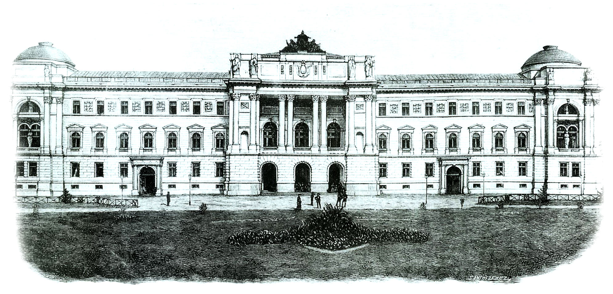

Університет — це центр знань та інкубатор для великих ідей. Заходи, що проводилися в університеті, організовані студентами та адміністрацією, показали перевагу, заполонивши аудиторії людьми, які готові щось змінювати.
Програма TEDx надає можливість насолоджуватися враженнями від доповідей студентам, бізнесменам, літлюбителям чи просто групам друзів у різних містах та країнах. Конференції в стилі TEDx були і в Україні. Запозичаючи досвід іноземців й надихаючись
результатами попередників, ми вирішили створити першу українську подію
в стилі TEDx на основі
університету.
TEDxLNU. «Подих
майбутнього».
Перша в Україні конференція в стилі TEDx University.
Нашими доповідачами будуть спеціалісти з різних галузей, які розказуватимуть, що чекає нас у найближчому майбутньому, як долучатися до створення «чогось нового» та пробуватимуть передбачити розвиток власної галузі/науки/хобі. Ми вважаємо, що молодій
людині буде цікаво слухати про професію, яку вона здобуває, а особливо про її майбутнє. Не маючи можливості висвітлити всіх сфер діяльності, ми вибрали спікерів, які говоритимуть про найцікавіші та найпоширеніші з них: література, IT, спорт, новітні
технології, сім’я, життєві цінності.
Команда TEDxLNU — студенти цього ж університету, проте абсолютно різних факультетів.
«Ми займаємося тим, в що справді віримо і любимо. Усі організатори TEDx в Україні працюють на волонтерських засадах».
Головною авдиторією конференції будуть студенти, тому й TEDxLNU проходитиме в альма-матері молодих людей — ЛНУ ім. Івана Франка. Окрім студентів, до події приєднаються викладачі та всі бажаючі. Запрошуємо і вас відвідати першу в Україні конференцію
в стилі TEDx University.